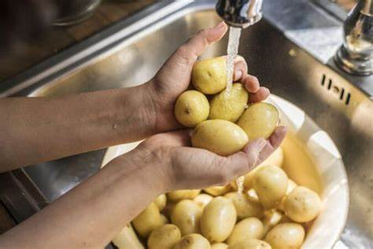
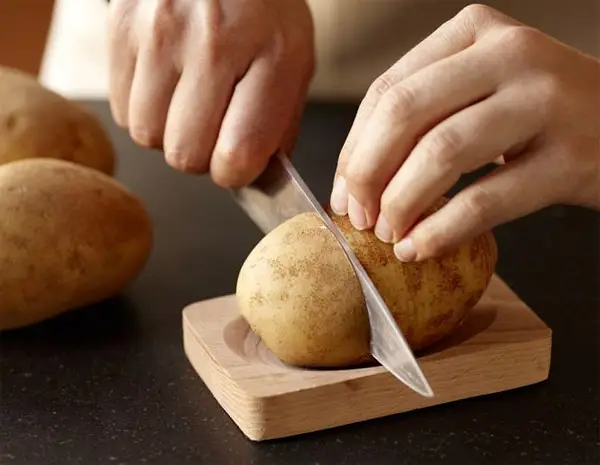
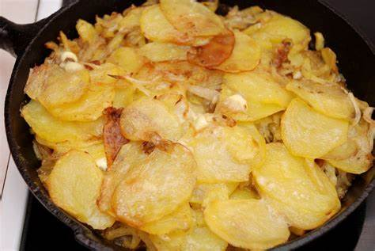
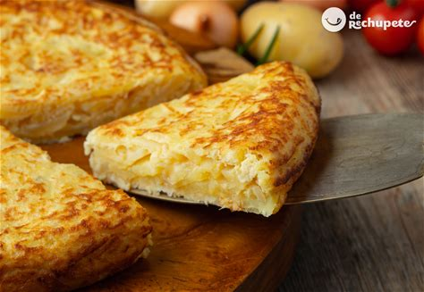

Pasos:
- Pela y corta las patatas en rodajas finas.
- Pela y corta la cebolla en trozos pequeños.
- En una sartén, calienta el aceite y añade las patatas y la cebolla. Cocina a fuego medio hasta que estén tiernas.
- Bate los huevos en un tazón grande y agrega las patatas y la cebolla cocidas. Mezcla bien y añade sal al gusto.
- En una sartén antiadherente, vierte la mezcla y cocina a fuego medio-bajo hasta que la parte inferior esté dorada.
- Con la ayuda de un plato, da la vuelta a la tortilla y cocina el otro lado hasta que esté completamente cocida.
- Sirve la tortilla caliente, ¡y disfruta!
Acompaña con una pizca de perejil para darle un toque fresco.



